NAGOYA MINATO / TRAFFIC ACCIDENT CARE
事故のあと、何から始めればいいか分からない方へ。
痛みも、手続きも、
ここで一緒に整理する。
名古屋市港区の交通事故・むち打ち専門サイト。国家資格者が、つらい首・腰の痛みから保険会社とのやり取り、慰謝料のご相談までサポートします。
- 0円自賠責保険で
窓口負担 原則0円 - 20:00交通事故の方は
夜20時まで受付 - 2台店舗前に
無料駐車場あり

SEITAI
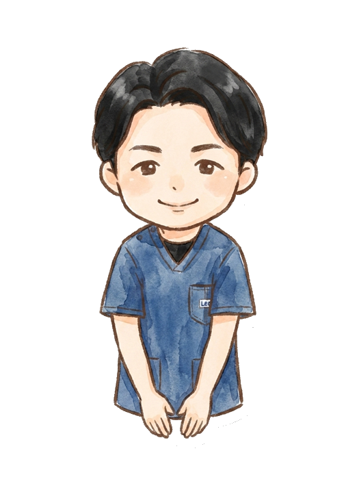
交通事故に遭ったあなたを、
ひとりにしない。
事故の後、こんな
お悩みありませんか？
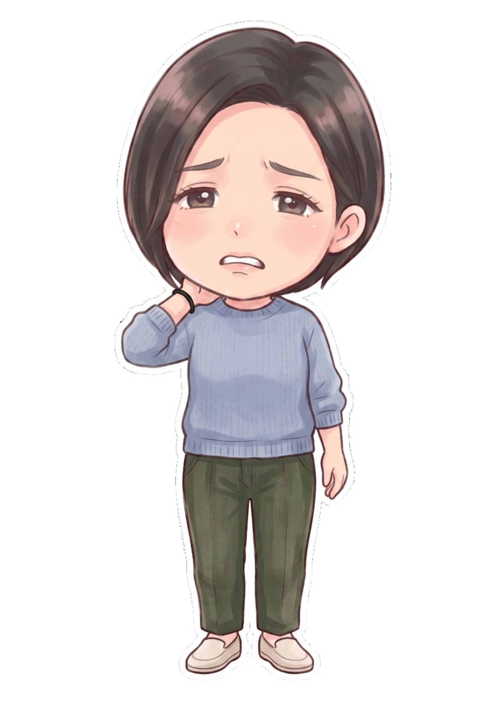
- 首や腰が痛い…でも何科に行けばいいのか分からない
- 事故直後は平気だったのに、数日後から痛みが出てきた
- 病院に通っているけど湿布と痛み止めだけで不安
- 保険会社とのやり取りや慰謝料のことが分からず不安
- 仕事や家事が忙しくて通う時間が取れない
そのお悩み、有輝接骨院／Bright整体におまかせください。
交通事故によるケガの施術は
交通事故によるケガの施術は自賠責保険が適用されるため、被害者の方の施術費用は原則0円。安心して必要な施術に専念いただけます。
費用と慰謝料について
交通事故の施術は自賠責保険の対象。費用面もご安心ください。
施術費用
自賠責保険が適用されるため、被害者の方の窓口でのお支払いは原則ありません。
通院慰謝料の目安
自賠責基準では「4,300円 × 2 × 実通院日数」で計算するため、通院1日あたり実質8,600円が目安です。（通院期間の日数を上限とする条件があります）
慰謝料 かんたん計算シミュレーター
自賠責基準で、受け取れる通院慰謝料の目安をその場で計算できます。
※ 本シミュレーターは自賠責基準（1日4,300円）に基づく概算の目安です。実際の金額は「実通院日数×2」と「通院期間の日数」の少ない方に4,300円を掛けて算出され、症状や状況により異なります。任意保険基準・弁護士基準では金額が変わる場合があります。正確な金額は当院までお気軽にご相談ください。
あなたの症状から選んでください
交通事故のケガは症状ごとに原因もケアも異なります。気になる症状をタップすると、原因・施術・保険の疑問まで専門ページで詳しくご覧いただけます。


交通事故の実例から探す
事故の形によって、過失割合・保険の使い方・起きやすいケガは変わります。あなたの事故に近いケースを選ぶと、対応の流れから補償・ケアまで詳しく分かります。


有輝接骨院が
選ばれる7つの理由
交通事故専門だからこそできる、手厚いサポート体制。
自賠責で窓口0円
自賠責保険の適用で、被害者の方の施術費用は原則0円。安心して通えます。
バキバキしない施術
ソフトな整体で、お一人おひとりに合わせたオーダーメイドの施術を行います。
転院・併用OK
今通っている病院・接骨院からの転院や、病院との併用通院もご相談ください。
国家資格者が施術
柔道整復師の国家資格を持つスタッフが、お一人おひとり丁寧に対応します。
夜20時まで対応
交通事故によるケガの方は夜20時まで受付。お仕事帰りでも無理なく通院できます。
平日夜も通いやすい
平日は夜20時まで通し営業。仕事帰りでも通いやすい時間設定です。
無料駐車場2台あり
店舗前に無料駐車場2台。お車での来院もスムーズです。
ご来院から施術までの流れ
はじめての方もご安心ください。スタッフがやさしくご案内します。
- 01

ご予約
LINE・お電話で。事故状況も気軽にご相談ください。
- 02
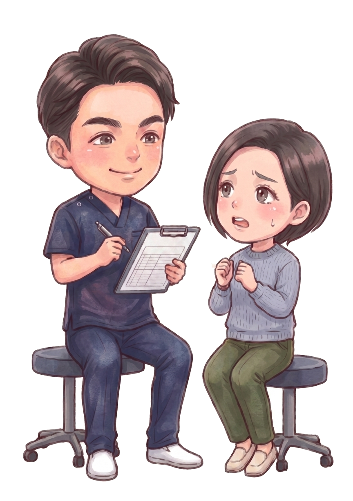
受付・カウンセリング
事故の状況やお体の状態を詳しくお伺いします。
- 03
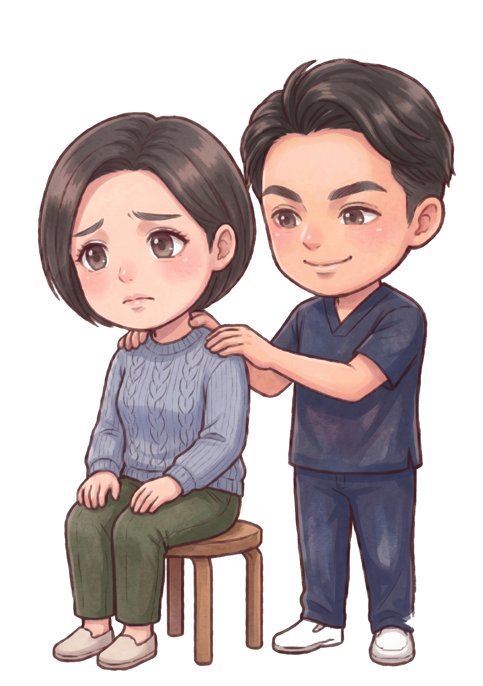
検査・説明
痛みの原因を検査し、施術方針を分かりやすくご説明。
- 04

施術
国家資格者がお一人おひとりに合わせて丁寧に施術。
- 05

通院サポート
保険会社への連絡や通院の不安もしっかりサポート。
あなたを支えるスタッフ紹介
国家資格を持つスタッフが、笑顔でお迎えします。
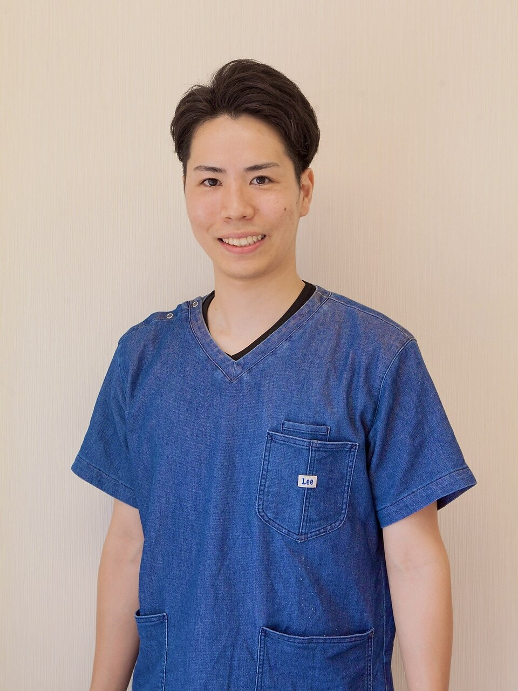

柔道整復師 / SPORTS TRAINER
伊藤 有輝ITO YUKI
柔道整復師・スポーツトレーナー。施術歴10年。1歳の娘のパパとして、お子様連れの方も大歓迎です。どんな小さな症状でもお気軽にご相談ください。
写真でわかる院の雰囲気
明るく清潔な院内で、キッズスペースも完備。お子様連れでも安心して通えます。
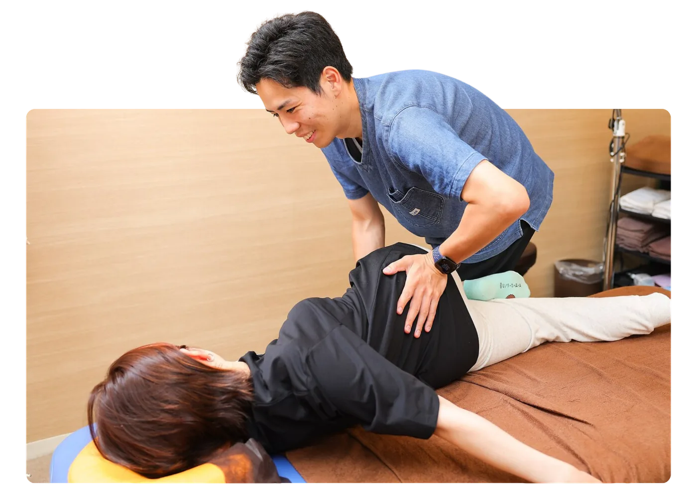
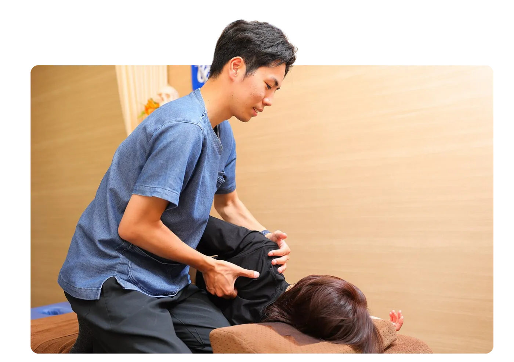
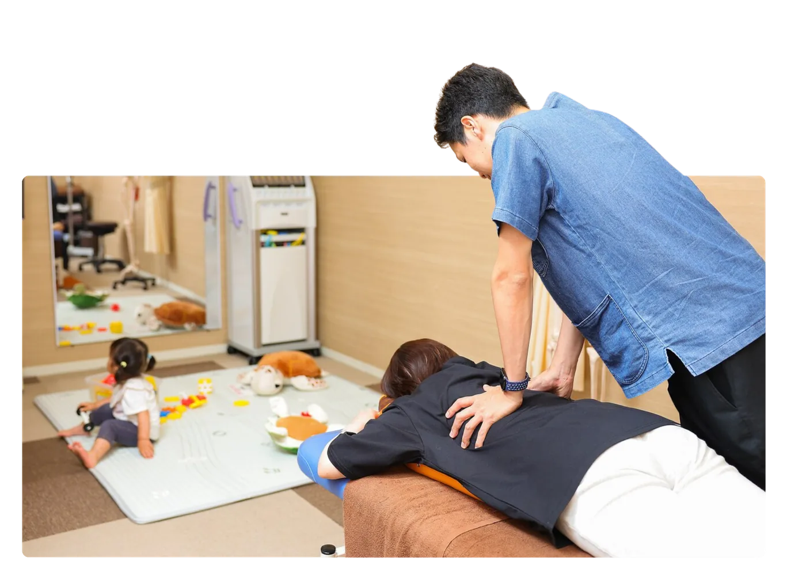
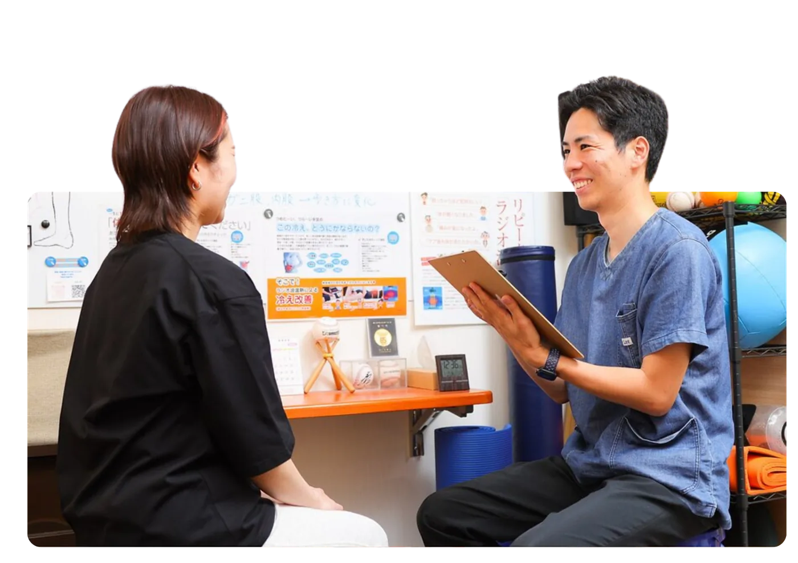
TikTok・Instagramで発信中
施術の様子やセルフケアのコツを動画でお届けしています。
TikTok
よくある質問
はい。交通事故によるケガの施術は自賠責保険が適用されるため、被害者の方の窓口負担は原則0円です。健康保険を使う場合と異なり、慰謝料の対象にもなります。詳しくはお気軽にご相談ください。
できます。現在通院中の病院や接骨院から有輝接骨院／Bright整体へ転院することも、病院と当院を併用して通うことも可能です。手続きのサポートもいたしますのでご安心ください。
はい、早めの受診をおすすめします。むち打ちなどは事故直後は痛みが出にくく、数日後に症状が現れることが多くあります。早期に検査・施術を始めることが、後遺症を防ぐうえでも大切です。
症状によって異なりますが、初期は週3〜4回など、できるだけ間隔を空けずに通っていただくと回復がスムーズです。お一人おひとりの状態に合わせて最適な通院ペースをご提案します。
自賠責保険では、通院日数などに応じて慰謝料が支払われます。きちんと通院し記録を残すことが大切です。当院では適切な通院をサポートいたします。上の計算シミュレーターで目安を確認できます。
完全予約制です。LINEまたはお電話（052-655-5610）でご予約いただくとスムーズです。交通事故によるケガの方は夜20時まで受付しております。
アクセス・院情報
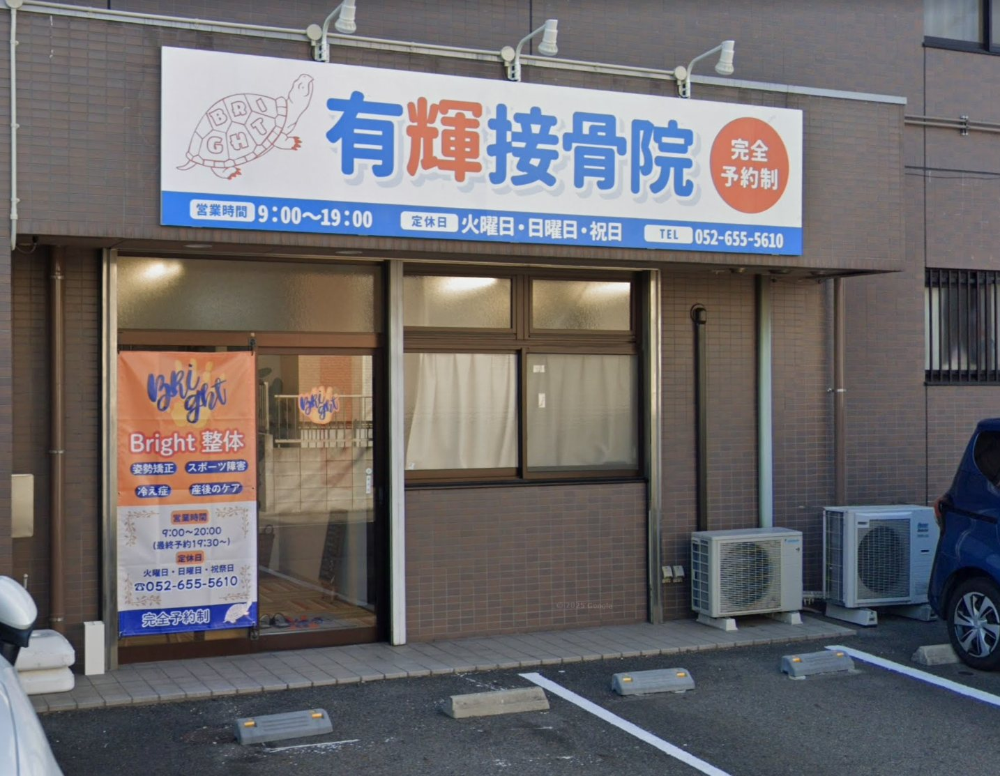
| 院名 | 有輝接骨院／Bright整体 |
|---|---|
| 住所 | 〒455-0054 愛知県名古屋市港区遠若町1丁目7-7 ハイツメイヨン1F |
| 電話 | 052-655-5610 |
| アクセス | 国道41号線から県道451号線へ入りすぐ左 |
| 駐車場 | 店舗前に2台あり |
| 受付時間 | 平日 9:00〜20:00（最終予約19:30） 土 9:00〜17:00（最終受付） 交通事故のご相談は受付時間内いつでも |
| 定休日 | 火曜・日曜・祝日 |
WE ARE HERE FOR YOU
そのつらい痛み、
我慢しないでご相談ください
交通事故・むち打ちのことなら、有輝接骨院／Bright整体へ。
LINE・お電話で、無料相談を受け付けています。
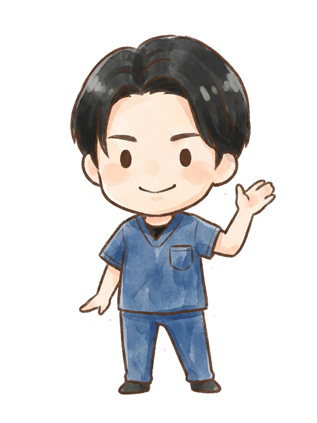